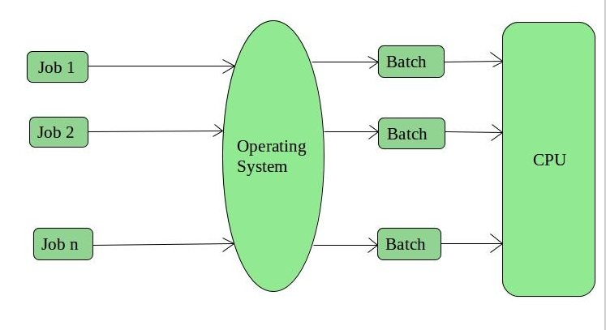

An Operating System performs all the basic tasks like managing file,process, and memory. Thus operating system acts as manager of all the resources, i.e. resource manager. Thus operating system becomes an interface between user and machine.
Types of Operating Systems: Some of the widely used operating systems are as follows-
1. Batch Operating System –
This type of operating system do not interact with the computer directly. There is an operator which takes similar jobs having same requirement and group them into batches. It is the responsibility of operator to sort the jobs with similar needs.

Advantages of Batch Operating System:
- It is very difficult to guess or know the time required by any job to complete. Processors of the batch systems knows how long the job would be when it is in queue
- Multiple users can share the batch systems
- The idle time batch system is very less
- It is easy to manage large work repeatedly in batch systems
Disadvantages of Batch Operating System:
- The computer operators should be well known with batch systems
- Batch systems are hard to debug
- It is sometime costly
- The other jobs will have to wait for an unknown time if any job fails
Examples of Batch based Operating System: Payroll System, Bank Statements etc.
2. Time-Sharing Operating Systems –
Each task has given some time to execute, so that all the tasks work smoothly. Each user gets time of CPU as they use single system. These systems are also known as Multitasking Systems. The task can be from single user or from different users also. The time that each task gets to execute is called quantum. After this time interval is over OS switches over to next task.

Advantages of Time-Sharing OS:
- Each task gets an equal opportunity
- Less chances of duplication of software
- CPU idle time can be reduced
Disadvantages of Time-Sharing OS:
- Reliability problem
- One must have to take care of security and integrity of user programs and data
- Data communication problem
Examples of Time-Sharing OSs are: Multics, Unix etc.
3. Distributed Operating System –
These types of operating system is a recent advancement in the world of computer technology and are being widely accepted all-over the world and, that too, with a great pace. Various autonomous interconnected computers communicate each other using a shared communication network. Independent systems possess their own memory unit and CPU. These are referred as loosely coupled systems or distributed systems. These systems processors differ in sizes and functions. The major benefit of working with these types of operating system is that it is always possible that one user can access the files or software which are not actually present on his system but on some other system connected within this network i.e., remote access is enabled within the devices connected in that network.

Advantages of Distributed Operating System:
- Failure of one will not affect the other network communication, as all systems are independent from each other
- Electronic mail increases the data exchange speed
- Since resources are being shared, computation is highly fast and durable
- Load on host computer reduces
- These systems are easily scalable as many systems can be easily added to the network
- Delay in data processing reduces
Disadvantages of Distributed Operating System:
- Failure of the main network will stop the entire communication
- To establish distributed systems the language which are used are not well defined yet
- These types of systems are not readily available as they are very expensive. Not only that the underlying software is highly complex and not understood well yet
Examples of Distributed Operating System are- LOCUS etc.
4. Network Operating System –
These systems runs on a server and provides the capability to manage data, users, groups, security, applications, and other networking functions. These type of operating systems allows shared access of files, printers, security, applications, and other networking functions over a small private network. One more important aspect of Network Operating Systems is that all the users are well aware of the underlying configuration, of all other users within the network, their individual connections etc. and that’s why these computers are popularly known as tightly coupled systems.

Advantages of Network Operating System:
- Highly stable centralized servers
- Security concerns are handled through servers
- New technologies and hardware up-gradation are easily integrated to the system
- Server access are possible remotely from different locations and types of systems
Disadvantages of Network Operating System:
- Servers are costly
- User has to depend on central location for most operations
- Maintenance and updates are required regularly
Examples of Network Operating System are: Microsoft Windows Server 2003, Microsoft Windows Server 2008, UNIX, Linux, Mac OS X, Novell NetWare, and BSD etc.
5. Real-Time Operating System –
These types of OSs serves the real-time systems. The time interval required to process and respond to inputs is very small. This time interval is called response time.
Real-time systems are used when there are time requirements are very strict like missile systems, air traffic control systems, robots etc.
Two types of Real-Time Operating System which are as follows:
- Hard Real-Time Systems:
These OSs are meant for the applications where time constraints are very strict and even the shortest possible delay is not acceptable. These systems are built for saving life like automatic parachutes or air bags which are required to be readily available in case of any accident. Virtual memory is almost never found in these systems. - Soft Real-Time Systems:
These OSs are for applications where for time-constraint is less strict.

Advantages of RTOS:
- Maximum Consumption: Maximum utilization of devices and system,thus more output from all the resources
- Task Shifting: Time assigned for shifting tasks in these systems are very less. For example in older systems it takes about 10 micro seconds in shifting one task to another and in latest systems it takes 3 micro seconds.
- Focus on Application: Focus on running applications and less importance to applications which are in queue.
- Real time operating system in embedded system: Since size of programs are small, RTOS can also be used in embedded systems like in transport and others.
- Error Free: These types of systems are error free.
- Memory Allocation: Memory allocation is best managed in these type of systems.
Disadvantages of RTOS:
- Limited Tasks: Very few task run at the same time and their concentration is very less on few applications to avoid errors.
- Use heavy system resources: Sometimes the system resources are not so good and they are expensive as well.
- Complex Algorithms: The algorithms are very complex and difficult fro the designer to write on.
- Device driver and interrupt signals: It needs specific device drivers and interrupt signals to response earliest to interrupts.
- Thread Priority: It is not good to set thread priority as these systems are very less pron to switching tasks.
Examples of Real-Time Operating Systems are: Scientific experiments, medical imaging systems, industrial control systems, weapon systems, robots, air traffic control systems, etc.